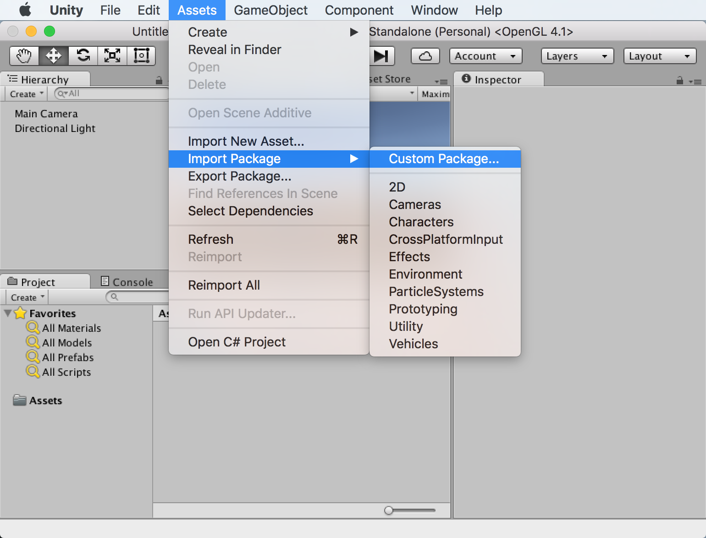
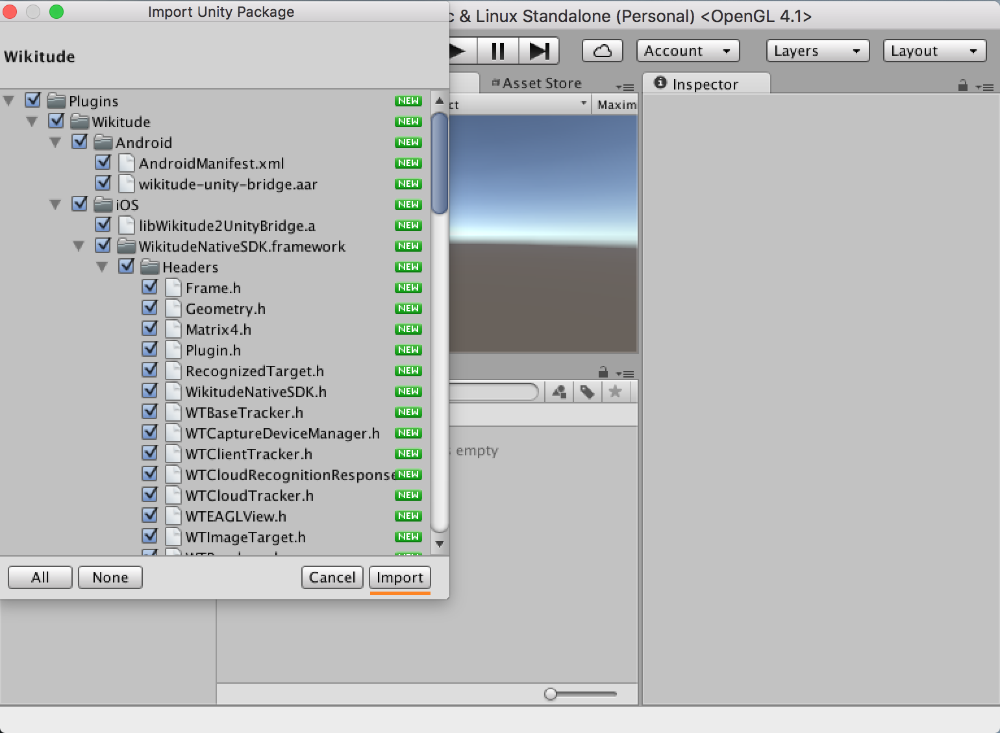
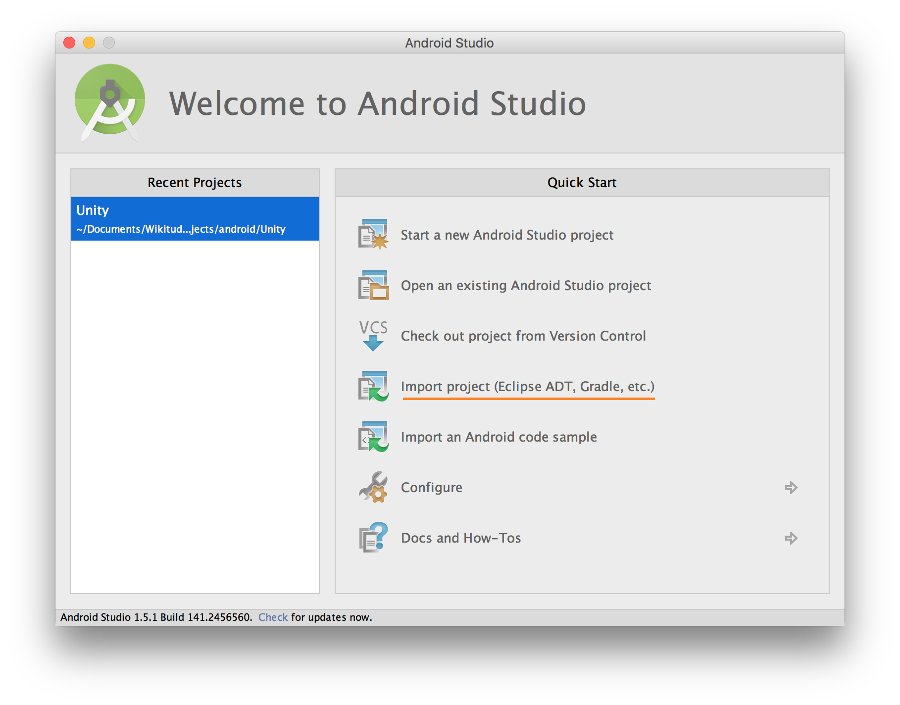

Setup Guide Unity Plugin
The latest version can be downloaded as an archive from the Wikitude website.
The archive includes a pre-configured project with samples and an Unity package (which also includes the samples). If the plugin is intended to be imported into an existing project jump to the section import Wikitude.unitypackage. Otherwise, continue with the next section (and skip importing the Unity package afterwards).
Open the Sample Project
The sample project included in the downloaded archive can be opened by adding it in the Unity Hub as another project. The location of the project is inside the downloaded archive's Examples folder. The Unity version for the project should be set to a supported version.
Two steps remain to be done after opening the project in order to be able to test the samples in the Editor or to export an application:
- A license key has to be set
- The build target has to be either iOS or Android. This setting can be found in the
Filedropdown menu by choosingBuild Settings.
After these steps the samples can be tested by either building a mobile app or by hitting the play button in a sample scene. There are multiple live preview modes available for testing in the Unity Editor, which can be set in the WikitudeCamera component.
Import the Wikitude.unitypackage
The downloaded archive also includes the plugin and samples as a standard .unitypackage and can be imported through the usual Unity package import procedure.
In your Unity project, open the Assets dropdown menu and choose Import Package -> Custom Package.

Select the downloaded Wikitude.unitypackage in the presented open file browser and click open. You should import all items that are part of the Wikitude.unitypackage. If the samples are not needed, the Wikitude > Samples, Wikitude > Prefabs and StreamingAssets folders can be deselected from the list.

Three steps remain to be done after importing the assets into the project in order to be able to test the samples in the Editor or to export an application:
- A license key has to be set
- The build target has to be either iOS or Android. This setting can be found in the
Filedropdown menu by choosingBuild Settings. - Additionally, the following Player settings have to be set (by opening the
Projects settingsin theEditdropdown menu and underPlayer > iOS/Android > Other Settings).- The bundle identifier for iOS and Android has to be changed to
com.wikitude.unityexample. - For Android, the minimum API level should be set to 22 or higher and the targeted API level to 30. Additionally, the
Scripting Backendshould be set toIL2CPPwithARM64enabled in theTarget Architectures. - For iOS, the minimum targeted iOS version should be set to 12.0 or higher and a
Camera Usage Descriptionas well as aLocation Usage Descriptionshould be provided. Later Additionally, the Architecture should be set toARM64.
- The bundle identifier for iOS and Android has to be changed to
The location usage description is required because location services are used for Geo AR purposes in the iOS plugin. Wikitude uses a common codebase throughout the products and even though this functionality is not exposed for Unity developers at the moment, Xcode still detects the presence of Geo AR, triggering a warning if he description is missing.
If Android 11 (API Level 30) support is required, additional settings might be required depending on the used Unity version. Please refer to the Google documentation therefore.
Use the Wikitude Unity plugin
After the Wikitude.unitypackage was imported, its components and scripts can be used to define a custom augmented reality experience. The example section describes in more detail how those prefabs and scripts can be used to do so.
Export and Xcode Build Settings Changes
Once the application is setup in Unity and ready for testing on a real device, it needs to be exported as an Xcode project for iOS, Android Studio project for Android, or Visual Studio project for UWP. Alternatively, for Android you can build the .apk directly from Unity.
Export to Xcode
iOS developers need to open the exported project and manually do the steps listed below.
- Before exporting, make sure the
Target minimum iOS versionis set to 9.0 or later andCamera Usage Descriptionis set to an appropriate message in the Unity in Player Settings. These settings can also be done in the Xcode project, but setting them in Unity will ensure it they don't get overwritten when rebuilding your project. - After the Xcode project was exported, the
WikitudeSDKframework has to be added as anEmbedded Binary.
After these steps are done once, building with Append or by pressing Cmd + B will ensure that the settings are kept.
Export an .apk file
If you don't need an Android Studio project, building directly from Unity is the fastest way to run your app on an Android device.
- In Unity open
File | Build Settings...
- Make sure
Androidis the current build target. If not, selectAndroidfrom the list and clickSwitch Platform - Click
Build And Runand choose where to save the .apk file. If you have an Android device connected, it will also install the app on it.
After this is done once, pressing Ctrl + B (Windows) or Cmd + B (Mac) will automatically create the .apk file and install it on your device, if it is connected.
Export to Android Studio
- In Unity open
File | Build Settings..., checkExport Projectand clickExport
- Ensure the project folder contains no space, otherwise you will have troubles deploying the project.
- Open Android Studio and click
Open an existing Android Studio project - Within the file selection dialog, navigate to the folder where you exported the project and select the folder named after your app.
- Android Studio may ask you to upgrade gradle, accept.
- Android Studio may complain about
minSdk versionandtargetSdk versionbeing set. Remove the line from theAndroidManifest.xml(<uses-sdk android:minSdkVersion="22" android:targetSdkVersion="30" />), and re-run gradle. - The project is now running in Android Studio
Export to Visual Studio
When building for UWP, the following settings need to be enabled to make sure that the SDK is compatible with Unity.
From the Build Settings menu, please make sure that:
Target Deviceis set toPCBuild Typeis set toD3DBuild and Run onis set toLocal Machine
Additionally, from the Player Settings -> Other Settings:
Graphics APIsis set toDirect3D11Scripting Backendis set toIL2CPP
And from Player Settings -> Publishing Settings:
CapabilitieshasInternetClientandWebCamenabled
At this point, the project can be exported to Visual Studio. Once the project is exported, you can build the project for x64.
Unity Requirements and supported versions
- Unity 2020.3.2f1 LTS or higher
- Rendering engines
- OpenGL ES 2
- OpenGL ES 3.x
- Metal (iOS only)
- Direct3D 11 (UWP only)